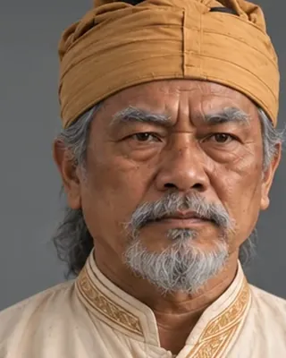

Ton Kham Borgohain
1532–1533 · Ahom general

Defeated Turbak's invasion and pursued the invaders to the Karatoya river.
Record confidence: medium.
1532–1533 · Ahom general

Defeated Turbak's invasion and pursued the invaders to the Karatoya river.
Record confidence: medium.